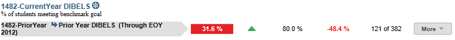
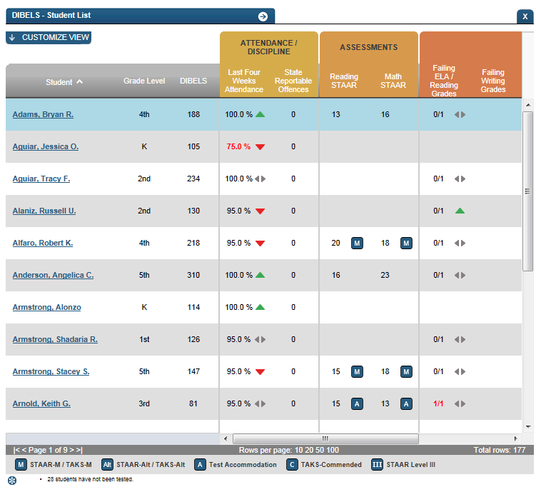
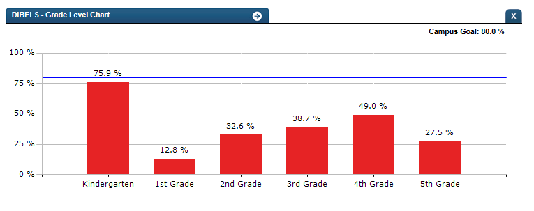

Dashboard Metrics


DIBELS
Background
Campus Metric
All reading inventories are broken into several sections, one for each skill assessed. The student is asked a series of questions and receives points for correct answers. The latest version of DIBELS (DIBELS Next, which is the most current version released in 2010-11) has a composite score as well as section scores (or measures). DIBELS 6th Edition has section/measure scores, but does not have a composite score (only a measure of overall risk). For the classroom educator, the value of these assessments lies with the individual section scores. Unlike reading level assessments, the sections and tasks for inventories are based on the time of year and the grade level of the student. Most inventories are given multiple times a year and vary slightly based on both the time of year and the grade of the student. DIBELS is either given three or four times a year (at campus or district discretion).
User Interface
DIBELS is designed to assess six early literacy skills:
- Phonemic Awareness
- Alphabetic Principal and Basic Phonics
- Advanced Phonics and Word Attack Skills
- Accurate and Fluent Reading of Connected Text
- Reading Comprehension
- Vocabulary and Language
- Skills
These six skills each correspond with a section of the assessment.
DIBELS Next:
- First Sound Fluency (FSF)
- Letter Naming Fluency (LNF)
- Phoneme Segmentation Fluency (PSF)
- Nonsense Word Fluency (NWF)
- DIBELS Oral Reading Fluency (DORF)
- Daze
In DIBELS Next, the composite score is a combination of multiple DIBELS scores, which provides the best overall estimate of the student's reading proficiency.
Each section, as well as the composite score, has both a benchmark goal and a cut point for risk. Students at or above the benchmark goal will most likely (approximately 80-90%) achieve later important reading outcomes with regular classroom instruction ("Core" support). Students between the goal and cut point for risk are identified as "Below Benchmark," will likely need "Strategic" support, and their future performance is harder to predict. Students below the cut point for risk are identified as "Well Below Benchmark" and are unlikely (approximately 10-20%) to achieve subsequent goals without receiving additional, targeted instructional ("Intensive") support.
DIBELS 6th will not be used at all starting in 2013.
Dashboard Example:

Ed-Fi Campus Level Language Assessment Metric
Business Rules
Status Definition on the Dashboard
The Status indicator is determined by the Benchmark Goals set by DIBELS. The default threshold is for 70% or more of students to meet the Benchmark Goal.
| Table 2 Campus Metric Indicators for DIBELS Next | ||||
| Student Metric Indicators | Trend Indicators | |||
| Metric Name | Sub-metric Name | Metric Status Indicator (a) | Compares: | To: |
| Reading Assessment | DIBELS Next | Red (Composite Score) = if less than 70% students' Composite Scores are below the benchmark goal for the testing time period Green (Composite Score) = if 70% or more of the students' Composite Scores are at or above the benchmark goal for the testing time period | Current period percentage | Prior period percentage |
(a) The Benchmark Value column displays number of students with a Composite score above the benchmark goal over the number of students with a composite score for the testing period on the campus
Trend Definition
Table 3 lists the Trend indicators for the DIBELS Next metric.
The trend indicator does not display if there is no previous data for the campus or if the most recent result is the Beginning of Year (BOY) testing.
| Table 3 Trend Indicators for DIBELS Next metric | |||
| Trend Indicators: Objective is to indicate trend of DIBELS Next performance | |||
| Up arrow green | | If the percentage of students has increased from the prior period by 5% or more | |
| Unchanged | If the percentage of students has changed less than 5% from the prior period | ||
| Down arrow red | If the percentage of students has decreased 5% or more from the prior period |
Periodicity
| Table 4 Recommended Load Characteristics for DIBELS Next Metric | |
| Recommended Load Characteristics | |
| Calendar | Beginning, Middle and End of Year |
| Frequency of data load | Weekly or Monthly |
| Latency | School Year |
| Interchange schema | Interchange-StudentAssessment.xsd |
Tooltips
The standard tool tips for the metric definition, column headers, and help functions display for this metric.
The following are tooltips specific to the DIBELS Next Performance metric:
- '+More' aligned with the DIBELS metric indicates drill down to view ‘Student Performance on Benchmark Goals’
- The sideways arrows display ‘The metric is unchanged from previous testing’
- The up arrow displays ‘The metric has increased from previous testing and this is good’
- The down arrow displays ‘The metric has decreased from previous testing and this is bad’'
Description for UI
- % of students meeting the benchmark goal
The DIBELS Next metric displays the percentage of students meeting the benchmark goal for the campus.
This metric displays the most recent DIBELS test data. For the early part of the school year, until current year values are available, the values reflect the most recent prior school year DIBELS scores. When the current year test results are received and loaded, the display is updated.
If the student took the same DIBELS test multiple times in a testing period [BOY (Beginning of Year), MOY (Middle of Year), or EOY (End of Year)], the most recent score is displayed, and if MOY or EOY, the prior testing period score is used for comparison.
The Table below lists the DIBELS Next Composite Cut Scores in each grade and testing period.
| DIBELS Next Composite Score Benchmark Goals and Cut Points for Risk | ||
| Grade and Testing Period | Cutpoint for Risk | Benchmark Goal |
| K - BOY | 13 | 26 |
| K - MOY | 85 | 122 |
| K - EOY | 89 | 119 |
| 1 - BOY | 97 | 113 |
| 1 - MOY | 100 | 130 |
| 1 - EOY | 111 | 155 |
| 2 - BOY | 109 | 141 |
| 2 - MOY | 145 | 190 |
| 2 - EOY | 180 | 238 |
| 3 - BOY | 180 | 220 |
| 3 - MOY | 235 | 285 |
| 3 - EOY | 280 | 330 |
| 4 - BOY | 245 | 290 |
| 4 - MOY | 290 | 330 |
| 4 - EOY | 330 | 391 |
| 5 - BOY | 258 | 357 |
| 5 - MOY | 310 | 372 |
| 5 - EOY | 340 | 415 |
| 6 - BOY | 280 | 344 |
| 6 - MOY | 285 | 358 |
| 6 - EOY | 324 | 380 |
Data Assumptions
- Student DIBELS Next scores by test measures are available for the appropriate grade level (as identified in Table 5).
- Grading or time period the test was taken, and the date the test was taken, are available.
- The defined thresholds of "Benchmark" or "Core" , “Strategic” , and "Intensive" are indicated by the cut scores in the table above.
- All test measure scores are available, as well as corresponding Risk Measures or Status definitions.
- Historical test scores for each student are available in the test provider files for the current and previous years. If these are not available, best practice is for a developer to obtain test files from prior years so that historical scores are included.
Data Anomalies
Anomalies
Best practice is to use footnotes to address these anomalies:
- Metrics are sensitive to when and how often the data is loaded.
- Late enrollees are likely to be missing previous assessment data.
Date of Refresh
Best practice is for the date of last data refresh to appear next the metric in the following format:
- (Through April 2011)
Implementation Considerations
Student Identity
The EDM XML supports the interchange of multiple types of identifiers. The StudentReference is a complex type within the EDM to maintain the referential integrity of the student (that is, ensuring that the data associated with each student is accurately associated with the right student). The complex type of the student reference assists with implementing the accurate matching algorithm to identify a student by utilizing any of the individual attributes (e.g., Student Unique State ID, Student ID, Campus Local ID (with Campus ID), Name and Birth Date). For example, if the Student Unique State ID is unknown, you can find the student’s identity by their Student ID, First Name, Last Name and Birth Date.
Reporting Retakes of the Same DIBELS Test
Currently the metric reports the most recent result for a given DIBELS test by type, grade level, and subject. Alternatively, developers may show results for each time a test is taken within a testing period to see the progress a student has made.
Changes in DIBELS Test Editions
DIBELS is phasing out the use of DIBELS 6th Edition, and is migrating all users to DIBELS Next by 2013.
Implications:
- Limited historical comparisons: When the switch is made, DIBELS 6th Edition will not be comparable to DIBLES Next.
Drill Downs
The dashboards include the option to see more detail that is associated with a specific metric. The recommended drill down for this metric provides a detailed look at the Test Measures and a graphical representation of the Composite Score and Support Recommendation level.
| Student List | A list of students performing below benchmark |
| Historical | Performance of the campus over time |
| Grade level | Performance broken down by grade level |

Ed-Fi Campus Level Language Assessment Student List

Ed-Fi Campus Level Language Assessment Grade Level